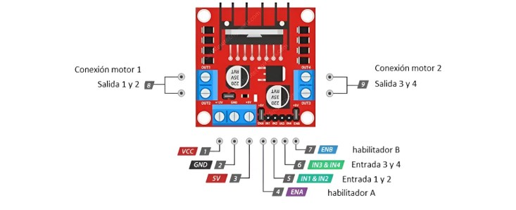

Día 3: Creación de circuito básico de movimiento con motores DC.
1. Contenido 1:Uso del MóduloL298N
El L298N es un módulo controlador de motores que se utiliza mucho en proyectos de robótica, electrónica y automatización, su principal función es ayudar a controlar la velocidad y dirección de motores eléctricos, como los de corriente continua (DC) o los motores paso a paso. Esto lo hace gracias a un circuito llamado puente H, que permite manejar dos motores al mismo tiempo de forma independiente.
1.1 Fundamentación teórica
1.1.1 驴Qué es el Módulo L298N?
El L298N es un módulo controlador de motores ampliamente empleado en proyectos de electrónica, robótica y automatización, diseñado específicamente para facilitar el control de la velocidad y dirección de motores eléctricos de corriente continua (DC) o motores paso a paso, gracias a su capacidad de operar como un puente H dual integrado. Este módulo está basado en el circuito integrado L298N, el cual permite manejar hasta dos motores de manera independiente, soportando voltajes de alimentación de motor que oscilan entre los 5V y 35V, así como corrientes máximas de hasta 2A por canal, lo que lo convierte en una solución robusta y versátil para aplicaciones de mediana potencia.
1.1.2 Partes del Módulo L298N

- 1. Conexiones para motores:
Motor 1: Se conecta a las salidas OUT1 y OUT2, estas salidas permiten controlar la dirección y velocidad del primer motor.
Motor 2: Se conecta a las salidas OUT3 y OUT4, estas salidas permiten controlar el segundo motor de manera independiente. - Conexiones de alimentación:
VCC: Entrada para alimentar los motores, con un rango de voltaje de 5V a 35V.
GND: Conexión a tierra común para el módulo.
5V: Salida de 5V y si es mayor a 7V en VCC; o entrada de 5V si no se supera este límite en VCC. - Pines de control:
IN1 e IN2: Controlan la dirección del Motor 1 (conectado a OUT1 y OUT2).
IN3 e IN4: Controlan la dirección del Motor 2 (conectado a OUT3 y OUT4).
ENA: Habilitador del Motor 1. Si se conecta a una señal PWM, permite controlar su velocidad.
ENB: Habilitador del Motor 2. También se puede conectar a una señal PWM para ajustar su velocidad.